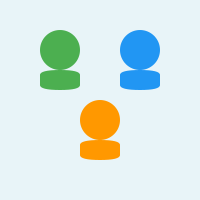
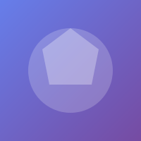
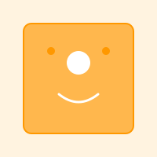

About Us
Welcome to our organization! Learn more about who we are, what we do, and why we do it.
Our Story

Our journey began with a simple idea: to create tools that make building web experiences easier and faster. We've grown from a small team of passionate developers into a community-driven organization focused on innovation and excellence.
Our Mission

We believe that powerful tools should be accessible to everyone. Our mission is to develop and maintain open-source software that empowers developers to build amazing things without being held back by complexity or poor performance.
Key aspects of our mission:
- Simplicity: Make web development intuitive and straightforward
- Performance: Every millisecond counts; we optimize relentlessly
- Community: Build together with developers around the world
- Open Source: Transparency and collaboration drive innovation
Our Values

Quality First
We commit to the highest standards of code quality and user experience. Every feature is thoroughly tested and documented.
Community Driven
Our users and contributors are at the heart of everything we do. We listen, adapt, and grow together.
Continuous Learning
Technology evolves rapidly, and so do we. We embrace new ideas and never stop improving.
Open and Transparent
We operate in the open, maintain clear communication, and welcome feedback from everyone.
Meet the Team
We're a diverse group of developers, designers, and community advocates from around the world. While we work remotely, we're united by our passion for creating excellent software.
Our team includes:
- Full-stack developers specializing in Rust and modern web technologies
- UX/UI designers focused on intuitive user experiences
- Technical writers committed to clear documentation
- Community managers building and nurturing our user base
Get Involved
Interested in joining our community or contributing? There are many ways to get involved:
- Report Issues: Found a bug? Let us know!
- Submit PRs: Have an improvement? We'd love to see it
- Write Documentation: Help others learn and succeed
- Share Feedback: Your insights help shape our future
Thank you for being part of our journey!